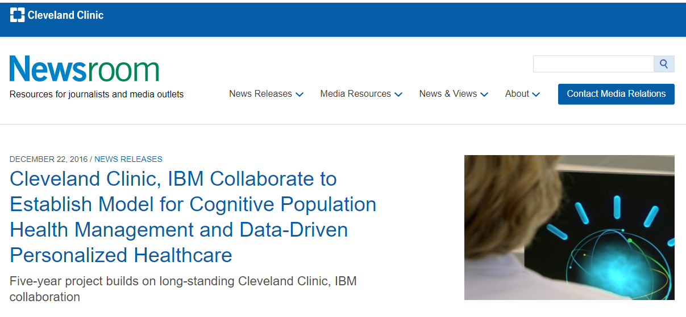
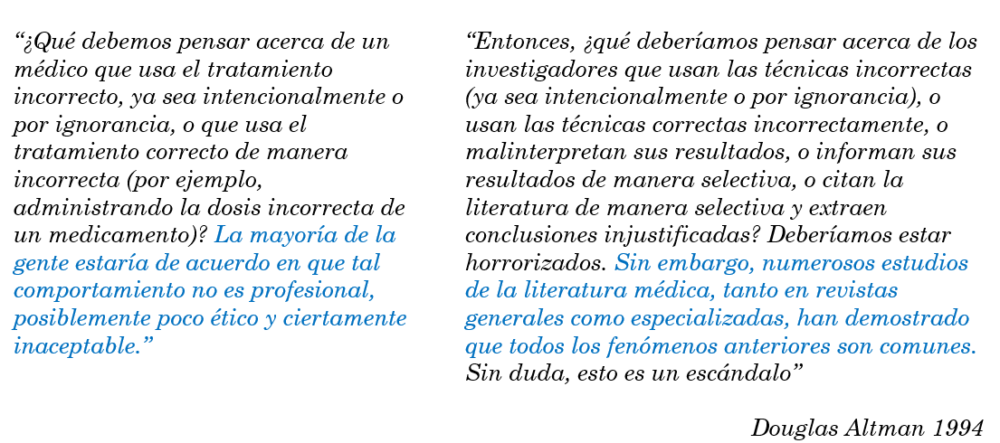

Sesión 0
Programa de Formación Científica:
Análisis Estadístico 2022
Percy Soto-Becerra
Instituto de Evaluación de Tecnologías en Salud e Investigación - IETSI, EsSalud
@github/psotob
Junio 15, 2022
Una motivación para comenzar
La Estadística y la Ciencia de Datos en el mundo actual - Las oportunidades



La crisis de replicabilidad de la Ciencia (incluyendo Ciencias Médicas)

Introducción al Curso
Acerca de este curso
Iniciativa de IETSI para promover el desarrollo de investigación científica en EsSalud a través del desarrollo de competencias para análisis de datos.
Buscamos desarrollar competencias en análisis de datos a través de la enseñanza de metodologías provenientes de la (Bio)Estadística y la Ciencia de Datos.
Información del curso se encuentra alojada en el siguiente enlace: https://ietsi-academy-aed.netlify.app/
¿Qué asumiremos?
- Los alumnos tienen algún conocimiento de (bio)estadística básica.
- Los alumnos pueden dedicar tiempo a estudiar los materiales compartidos en clase.
- Los alumnos van a aplicar las competencias adquiridas en estudios de investigación.
Veamos el programa y cronograma de este curso
Filosofía de este curso
¿Cuál será el enfoque del curso?
- Nos centraremos en la aplicación de los métodos en el programa estadístico R a través de su interfaz RStudio.
- Poco tiempo para profundizar en el funcionamiento de los métodos.
- Compartiremos recursos bibliográficos para esto.
- La web ya indica algunos: https://ietsi-academy-aed.netlify.app/recursos.html
- Iremos colocando extras, clase por clase.
¿Cuál será el enfoque del curso? (cont.)
- Promoveremos una filosofía de (Bio)Estadística/Ciencia de Datos basada en Evidencia.
- Nos centraremos en pautas/recomendaciones reconocidas de aplicación de métodos.
- Siempre que exista consensos internacionales, los indicaremos.
- Expondremos las malas prácticas para evitarlas.
- Poco tiempo para detallar justificación teórica/metodológica.
- Compartiremos literatura para que profundicen.
¿(Bio)Estadística o Ciencia de Datos basada en Evidencia?
- Pensemos en la siguiente analogía: los métodos de análisis de datos son como las intervenciones médicas.
- Algunas intervenciones médicas son muy efectivas, otras no.
- Entre dos intervenciones médicas efectivas, alguna será mejor que otra para cierto contexto.
- En otro contexto, la otra podría ser mejor.
¿(Bio)Estadística o Ciencia de Datos basada en Evidencia? (cont.)
- Hay intervenciones médicas que causan más daño que beneficio
- Históricamente los médicos las han recomendado.
- Hasta que lo notaron y las dejaron de usar o restringieron su uso.
- Hay intervenciones médicas que tienen similar balance riesgo/beneficio.
- En estos casos, uno puede optar por cualquiera de ellas sin mucho problema.
- O basarse en otros criterios como preferencias del médico, entre otras.
¿(Bio)Estadística o Ciencia de Datos basada en Evidencia? (cont.)
- Las evidencias acerca de la efectividad de intervenciones médicas provienen de diversas fuentes y diferentes metodologías.
- Al igual que en Medicina, en (Bio)Estadística y Ciencia de Datos el experimento computacional (también llamado simulación) bien realizado es considerado el máximo nivel de evidencia.
- Cuando la evidencia se acumula, se pueden crear consensos y recomendaciones, similares a las guías de práctica clínica.
¿(Bio)Estadística o Ciencia de Datos basada en Evidencia? (cont.)
- En las últimas dos décadas, muchos consensos han emergido basados en evidencia sólida (p.ej., experimentos computacionales, etc.). Este curso promoverá su uso.
- Como pasa en cualquier disciplina, y la Medicina es un ejemplo de esto, muchas buenas prácticas son seguidas por un sector muy pequeño.
- En cambio, priman las malas prácticas. Este curso las expondrá para prevenir que incurran en ellas.
El escándalo de la mala investigación médica

El escándalo de la mala investigación médica (cont.)

Iniciativa mundial STRATOS
- STRATOS (STRengthening Analytical Thinking for Observational Studies) initiative
- Surge en 2013, en nov. 2019 ~100 investigadores de 18 países con fuerte background en métodos bioestadísticos y epidemiológico
- Conectado con organizaciones internacionales:
- International Society of Clinical Biostatistics (ISCB)
- International Biometric Society (IBS)
- Web: http://www.stratos-initiative.org/
Iniciativa mundial STRATOS (cont.)
Iniciativa mundial STRATOS (cont.)
- Guías desarrolladas están dirigidas a 3 perfiles de usuarios:
Bajo nivel de estadística
Proponer métodos aceptables que son fácilmente implementables.
Resaltar debilidades de enfoques comunes.
Estadístico experimentado
Hacer referencia a las ventajas y desventajas de enfoques que compiten.
Proponer metodología avanzada factibles para analistas experimentados.
Experto en área específica
Considerar los desarrollos recientes con declaraciones acerca de sus posibles ventajas y desventajas.
Identificar áreas que necesitan más investigación u orientación metodológica.
Algunos recursos para encontrar consensos y guías basadas en evidencia

¿Más recursos?
- Últimas guías de reporte de revistas top incluyen métodos y buenas prácticas reconocidas.
- Revistas metodológicas también son buenos puntos de partida:
- Ejemplos: BMC Medical Research Metodology, Statistics in Medicine, IJE, etc.
- Buscar guías, tutoriales o revisiones con recomendaciones.
- “Precaución: Tener cuidado con propuestas metodológicas nuevas. Son como fármacos nuevos, requieren más estudios para validar sus bondades.
“¡Cuidado!
- Muchas publicaciones en revistas indexadas incurren en malas prácticas.
- Incluso revistas de cuartil 1 como NEJM, JAMA, BMJ, Nature han cometido grandes errores metodológicos!
- Y han ocurrido retracciones de estos estudios años después.
- Y han ocurrido retracciones de estos estudios años después.
- En revistas de menor nivel, incluso grandes y evidentes errores no suelen puntualizarse y no hay retracciones.
- Revisar guías/consensos/artículos metodológicos es más confiable que imitar análisis/prácticas de otras publicaciones.
Recursos sobre Bioestadística con R
- The Epidemiologist R Handbook: https://epirhandbook.com/en/
- R for Epidemiology: https://www.r4epi.com/
- R for Health Data Science: https://argoshare.is.ed.ac.uk/healthyr_book/
- R for Data Science: https://r4ds.had.co.nz/
R Bookdown tiene varios recursos interesantes
Libros en R Bookdown
- Fundamentals of Wrangling Healthcare Data with R: https://bookdown.org/jkylearmstrong/jeff_data_wrangling/
- Introduction to Regression Methods for Public Health Using R: https://bookdown.org/rwnahhas/RMPH/
Libros en R Bookdown (cont.)
- Reproducible Medical Research with R: https://bookdown.org/pdr_higgins/rmrwr/
- Data Analysis in Medicine and Health using R: https://bookdown.org/drki_musa/dataanalysis/
- (Mostly Clinical) Epidemiology with R: https://bookdown.org/jbrophy115/bookdown-clinepi/
Programa de Formación Científica: Análisis Estadístico 2022 - Sesión 0